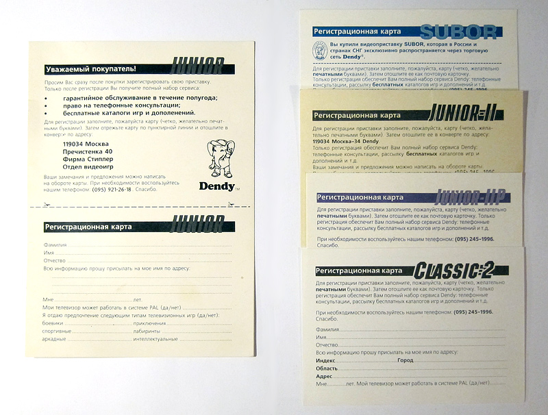
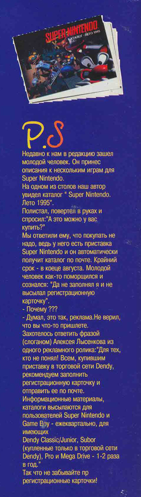
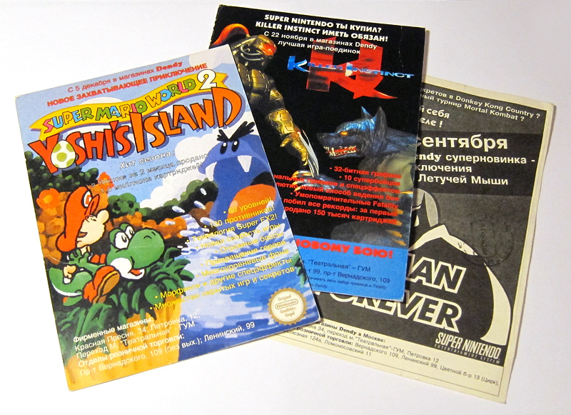
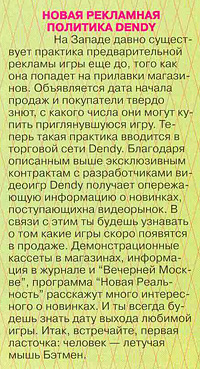
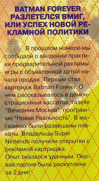
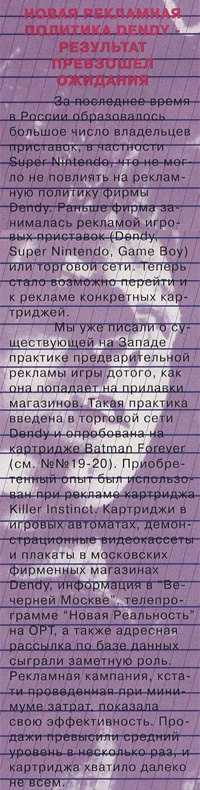
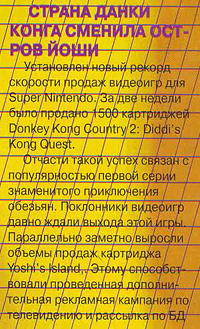

Музей Dendy от Steepler / Рекламные буклеты
Главным отличием продукции фирмы Steepler, а затем и ее дочерней Dendy, от продукции безликих китайских и тайваньских фирм, ввозившейся из-за рубежа челноками, была довольно мощная гарантийная и информационная поддержка.
Купив приставку в фирменном магазине Dendy, в коробке вы обнаруживали регистрационную карточку, заполнив и отослав которую, можно было зарегистрировать свою приставку.
В тексте карточки сообщалось, что регистрация обеспечит получение полного спектра услуг фирмы - от телефонных консультаций до бесплатных каталогов. Для России девяностых это было в новинку - фактически, ни один производитель приставок и игр не имел официального представительства в России, а азиатские же производители клонов были от этого очень далеки.
Карточки были нескольких видов. Самые первые были размером с две почтовые открытки и имели линию отреза. Отсылать такие карточки нужно было в конверте. Затем для удобства карточки стали делать сразу как открытки - сначала для отсылки в конверте, а затем и со стандартной открыточной разметкой и местом для марки.

Регистрационные карточки от приставок фирмы Dendy
Мало кто в детстве обращал внимание на все эти скучные бумажки, ведь самое главное было - игра! Но те добросовестные или любопытные дети, которым было не лень отправить письмо или уговорить сделать это родителей, через какое-то время обнаруживали в почтовом ящике письмо со знакомым слонёнком на конверте! Можно себе представить, какой восторг это вызывало у детей - письмо от самого Денди! Конверт тут же разрывался в клочки (или аккуратно разрезался), и на свет появлялся красочный каталог игр и приставок Dendy!
Целых шестьдесят страниц - подробные описания приставок, джойстиков, пистолетов, картриджей с увлекательнейшими играми, адреса магазинов, где всё это можно купить - уйма полезной информации!
Известно как минимум два таких каталога игр Dendy "Каталог - весна 1994" в желтой обложке и "Каталог - лето 1994" в голубой. Печатались эти каталоги, что характерно, в Тайване.

Каталог Dendy - весна 1994
Если же вы являлись более счастливым обладателем Sega Mega Drive или Super Nintendo - предметом зависти всего двора, то вам присылались каталоги игр и для этих приставок. Был также и совместный буклет для игр на SNES и Game Boy. Надо отметить, что в отличие от самих шестнадцатибитных приставок, их рекламные буклеты и каталоги выглядели куда скромнее и тоньше "дендевских". Возможно, причиной этому было нестабильная финансовая ситуация в стране и вполне понятное желание фирмы сэкономить.
|
 |
|

Но и этим дело не ограничивалось! Super Nintendo в виду своей дороговизны нуждалась в активной рекламе, поэтому в 1995 году фирма Dendy приняла комплекс мер по продвижению этой приставки, который включал в себя и рассылку почтовых карточек с рекламой самых ожидаемых игр на Super Nintendo.
Известны как минимум три такие карточки, выполненные на плотном картоне - по играм Batman Forever, Killer Instinct и Yoshi's Island.
Как утверждает журнал "Dendy - Новая реальность", это позволило распродать первые партии картриджей буквально в считанные дни.

Почтовые карточки с рекламой игр для Super Nintendo
|
  |
 |
 |
К настоящему моменту сохранилось не так уж и много таких каталогов, буклетов и открыток, так как мало кто хранил их.
Но благодаря особенно бережливым людям все они теперь доступны для скачивания на сайте:
Каталог Dendy - весна 1994
Каталог игр для Sega
Каталог игр для SNES - лето 1995
Каталог игр для SNES и Game Boy - 1995
Почтовые карточки